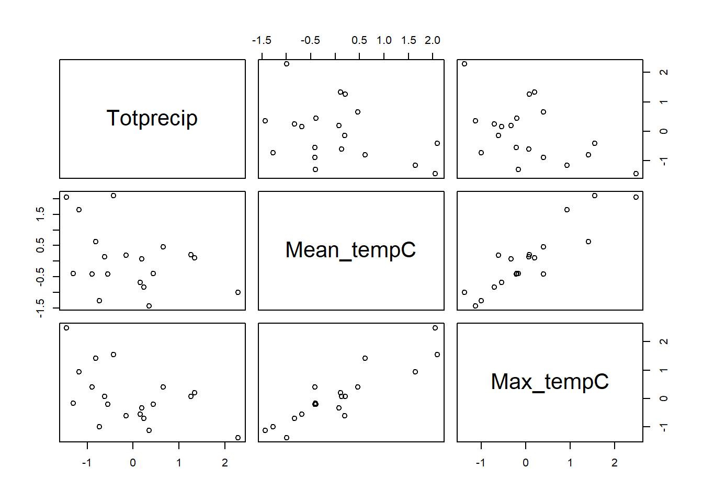
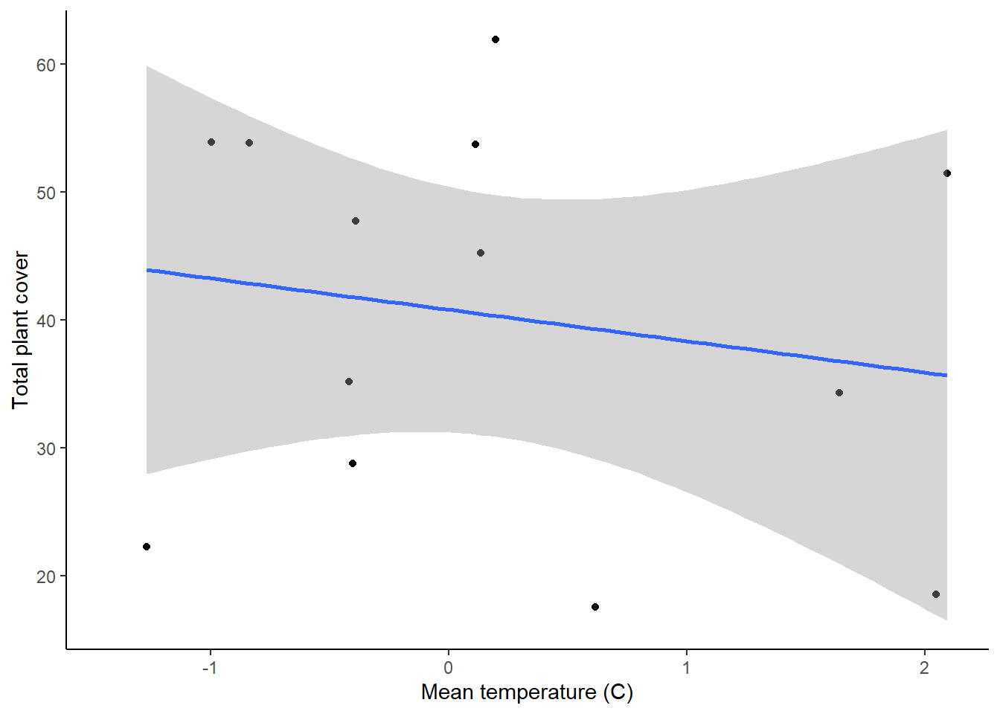
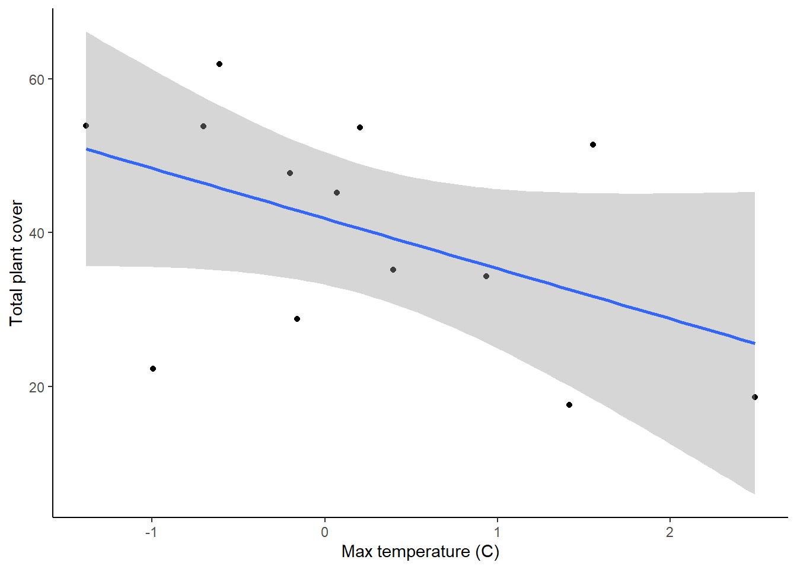
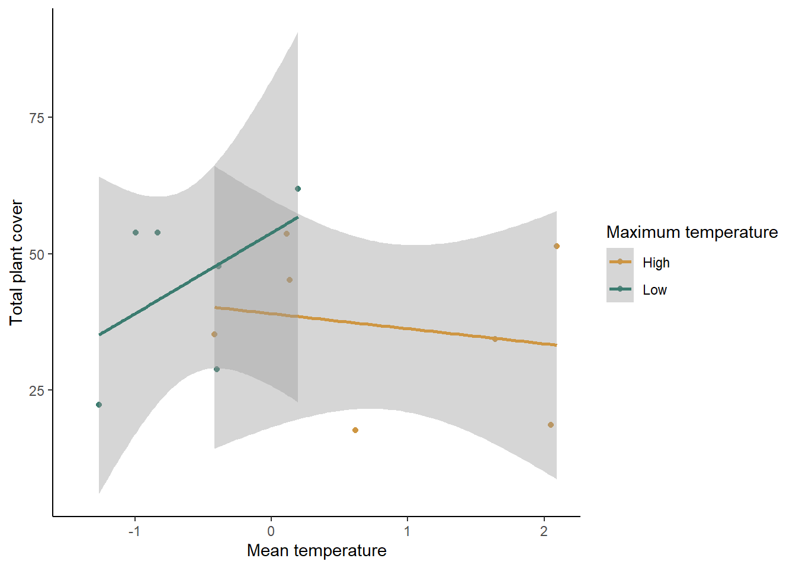

In this lesson, you will tackle two types of tests that can be used when you have two continuous variables: correlations and regressions. Correlations are typically used when we think there might be a relationship between the two variables, but not a causal relationship (i.e., you don’t have clear independent and dependent variables). A regression is used when we hypothesize that there is a causal relationship between our variables or if we want to be able to use one variable to predict the value of the other, even if there isn’t a causal relationship.
For this lesson, we will work with a summarized version of the plant cover data set that we worked with once before (comparing cover of native and invasive plants), but this time we will look at some climate variables as possible predictor of native plant cover.
For our correlation analysis, we are going to look at correlations between our three climate variables: total precipitation (Totprecip), mean temperature (Mean_tempC), and maximum temperature (Max_tempC). There are often relationships between different climate variables, but those relationships are not usual causal (e.g., higher precipitation doesn’t cause higher temperatures), so a correlation analysis is the right way to go for analyzing these relationships.
First, load the data set. Be sure your working directory is set correctly.
plant <- read.csv("PlantSumm.csv")To visualize relationships between two continuous variables, a
scatterplot is a good approach. With a correlation, we don’t always add
a best fit line (the best fit line is the output of a regression
analysis). Here we have three climate variables, so we want to look at
the pairwise relationships between each pair of variables. We could do
that with three completely separate plots, but there’s a faster way!
With the pairs function, we can generate a grid of plots
that shows the relationship between all pairs of variables we want to
include in our analysis. We just provide a formula with the variables we
want to include and the data set from which they come.
pairs(~ Totprecip + Mean_tempC + Max_tempC, data = plant) 
In the output, you can see the variables on the diagonal and the scatterplot for each pair of variables. (Note that the plots below the diagonal are just repeats of the plots above the diagonal, but with the axes switched). Which variables appear to have a strong correlation?
Now we will run a formal test to see if the correlations are
significant. You can download additional packages that will
automatically run the test for all pairs of variables in our data set,
but we will just use the base R function (cor.test), so
we’ll run a separate test for each pair of variables. Because we are
running three tests on the same data set, it’s a good idea to do a
Bonferroni correction. What will our new threshold p-value be?
To run the pairwise tests, we’ll use the with function
in combination with the cor.test function, to pull out the
two variables we want from the plant data set and run the correlation
for those two variables.
with(plant,cor.test(Mean_tempC,Max_tempC))##
## Pearson's product-moment correlation
##
## data: Mean_tempC and Max_tempC
## t = 8.4936, df = 17, p-value = 1.6e-07
## alternative hypothesis: true correlation is not equal to 0
## 95 percent confidence interval:
## 0.7531352 0.9611007
## sample estimates:
## cor
## 0.8996063with(plant,cor.test(Mean_tempC,Totprecip))##
## Pearson's product-moment correlation
##
## data: Mean_tempC and Totprecip
## t = -1.6944, df = 17, p-value = 0.1084
## alternative hypothesis: true correlation is not equal to 0
## 95 percent confidence interval:
## -0.71147981 0.08956702
## sample estimates:
## cor
## -0.3801058with(plant,cor.test(Max_tempC,Totprecip))##
## Pearson's product-moment correlation
##
## data: Max_tempC and Totprecip
## t = -2.5001, df = 17, p-value = 0.02294
## alternative hypothesis: true correlation is not equal to 0
## 95 percent confidence interval:
## -0.78728864 -0.08407849
## sample estimates:
## cor
## -0.5184872Based on the output of these tests, which are statistically significant (don’t forget to use the new threshold p-value from your Bonferroni correction).
Now we will test the effect of climate variables on the plant cover. In this case, it would make sense for there to be a causal relationship between the climate variables and plant cover, so we will use a linear regression.
Good news! You don’t have to learn any new code for this!
To keep things simpler, we will just test the effects of the two temperature variables on the total plant cover. For now, we’ll build three models: the null model, an alternative model for mean temperature, and an alternative model for maximum temperature.
plant_null <- lm(tot_cover ~ 1, plant)
plant_mean <- lm(tot_cover ~ Mean_tempC, plant)
plant_max <- lm(tot_cover ~ Max_tempC, plant)To view the output of your models, type the name of each model. Just like when we have worked with this model before, the null model will have just an intercept, and the alternative model will have a intercept and a slope term for the effect of either mean or maximum temperature on plant cover.
Now, let’s create graphs to visualize our data. Because we have two
continuous variables, a scatterplot is a good option. We will also
include a best fit line based on our alternative model. We’ll make two
graphs, one for each of our independent variables. If you haven’t
already, load the tidyverse package first.
library(ggplot2)
ggplot(plant, aes(x=Mean_tempC, y=tot_cover)) +
geom_point() +
geom_smooth(method="lm")+
labs(x="Mean temperature (C)", y="Total plant cover") +
theme_classic()
ggplot(plant, aes(x=Max_tempC, y=tot_cover)) +
geom_point() +
geom_smooth(method="lm")+
labs(x="Max temperature (C)", y="Total plant cover") +
theme_classic()
Let’s again start by analyzing the models using a frequentist approach. We don’t actually need to run any additional tests for this. We can just look at some additional output from the models we already ran.
To view the additional output, use the summary
function.
summary(plant_mean)##
## Call:
## lm(formula = tot_cover ~ Mean_tempC, data = plant)
##
## Residuals:
## Min 1Q Median 3Q Max
## -21.707 -13.027 4.722 10.964 21.556
##
## Coefficients:
## Estimate Std. Error t value Pr(>|t|)
## (Intercept) 40.812 4.359 9.362 1.42e-06 ***
## Mean_tempC -2.451 3.993 -0.614 0.552
## ---
## Signif. codes: 0 '***' 0.001 '**' 0.01 '*' 0.05 '.' 0.1 ' ' 1
##
## Residual standard error: 15.47 on 11 degrees of freedom
## (6 observations deleted due to missingness)
## Multiple R-squared: 0.03311, Adjusted R-squared: -0.05479
## F-statistic: 0.3767 on 1 and 11 DF, p-value: 0.5518summary(plant_max)##
## Call:
## lm(formula = tot_cover ~ Max_tempC, data = plant)
##
## Residuals:
## Min 1Q Median 3Q Max
## -26.058 -7.017 3.003 7.405 19.695
##
## Coefficients:
## Estimate Std. Error t value Pr(>|t|)
## (Intercept) 41.846 3.913 10.695 3.76e-07 ***
## Max_tempC -6.526 3.583 -1.821 0.0958 .
## ---
## Signif. codes: 0 '***' 0.001 '**' 0.01 '*' 0.05 '.' 0.1 ' ' 1
##
## Residual standard error: 13.79 on 11 degrees of freedom
## (6 observations deleted due to missingness)
## Multiple R-squared: 0.2317, Adjusted R-squared: 0.1618
## F-statistic: 3.317 on 1 and 11 DF, p-value: 0.09585When you view the output, you will see a number of things. First, you will be able to see the the formula you used to build the models. Then you will see some information on the distribution of the residuals (the leftover variation not explained by your model). Next, you will see the coefficients from your model, along with standard error of the estimates. The coefficients section will also show you t-values and p-values for each coefficient. These are one-sample t-tests comparing the value of the coefficient to zero.
The information we really want for our linear regression test is down at the very bottom. In the final section, you will see some R-squared values. These are a measure of how much variation in your dependent variable is explained by your independent variable (we will talk about this more in class). Below that, you will see the output of the linear regression test. First is the F-statistic (the same statistic that was calculated for the ANOVA). Then you will see the p-value. Based on these values, would your reject or accept the null hypothesis? What does this tell you about the effect of temperature on plant growth?
Next we will use a likelihood-based approach to test the same
question. Once again, the approach is the same as what you used for the
t-test and ANOVA, using the AIC function to compare the two
models.
AIC(plant_null, plant_mean, plant_max)## df AIC
## plant_null 2 110.3634
## plant_mean 3 111.9256
## plant_max 3 108.9372Based on this output, what would you conclude about the effect of mean and maximum temperature on plant growth?
In the previous section, we ran two regressions: one for each of our two models. However, we have discussed the problems with running multiple tests on the same data set. To address this, we can instead run a multiple regression, which is essentially the regression version of the two-way ANOVA. You can include multiple predictors in the same model, but this time, the predictor models are both continuous rather than categorical. We already built our null model and our models with only one predictor, now lets build our two models with both predictors (one without and one with interactions).
plant_both <- lm(tot_cover ~ Mean_tempC + Max_tempC, plant)
plant_int <- lm(tot_cover ~ Mean_tempC * Max_tempC, plant)For the classical frequentist approach, all we have to do is take a look at the output of our full model (both variables with an interaction), so we can interpret the effects of our predictors.
summary(plant_int)##
## Call:
## lm(formula = tot_cover ~ Mean_tempC * Max_tempC, data = plant)
##
## Residuals:
## Min 1Q Median 3Q Max
## -16.493 -7.352 1.749 6.354 11.995
##
## Coefficients:
## Estimate Std. Error t value Pr(>|t|)
## (Intercept) 44.582 4.095 10.887 1.76e-06 ***
## Mean_tempC 17.897 6.701 2.671 0.0256 *
## Max_tempC -19.882 6.574 -3.024 0.0144 *
## Mean_tempC:Max_tempC -2.931 2.929 -1.001 0.3431
## ---
## Signif. codes: 0 '***' 0.001 '**' 0.01 '*' 0.05 '.' 0.1 ' ' 1
##
## Residual standard error: 11.36 on 9 degrees of freedom
## (6 observations deleted due to missingness)
## Multiple R-squared: 0.5735, Adjusted R-squared: 0.4313
## F-statistic: 4.034 on 3 and 9 DF, p-value: 0.04507First, look at the statistics for the overall regression (the last line of the output). Based on this, does at least one of the predictors have a significant effect?
Now look at the p-values from the t-test that compare each slope term to zero (in the Coefficients section). Based on these p-values, which effects (mean temperature, maximum temperature, interaction between mean and maximum temperature) are statistically significant?
You know the drill here. As usual, which just have to compare the AIC values between all of our models.
AIC(plant_null, plant_mean, plant_max, plant_both, plant_int)## df AIC
## plant_null 2 110.3634
## plant_mean 3 111.9256
## plant_max 3 108.9372
## plant_both 4 104.6580
## plant_int 5 105.2864Based on the AIC values, which model(s) is(are) the best? What does this tell you about which predictor are important for explaining plant cover?
Look back at the conclusions you drew about the effects of your predictor variables from your single and multiple regressions. Do your conclusions match? Why do you think this is (hint: think about the results of your correlation analysis, where you looked at correlations between the predictor variables)?
We’ll discuss this as a class, but think on your own/and or discuss in small groups first.
It is challenging to visualize two continuous predictor variable at the same time (I think 3D graphs are hard to read). One option is just to make separate scatter plots for each predictor, like we did above for our single regressions, but that does not allow you to see interactions between the two variables. What I often do is convert one of the predictors to a categorical variable (just for the graph, not for the test), and graph both of the predictors at the same time. We’ll try that.
First, we will use the mutate function to create a new
variable that converts maximum temperature to a category. We will just
use two categories: high and low. High maximum temperature will be
anything above the median maximum temperature from our data set, and low
maximum temperature will be anything less than or equal to the median.
To to this, we will use the ifelse function. This function
allows us to set a value for something if it matches
certain criteria (in this case, if the maximum temperature is greater
than the median) and set a different values if it does not match the
criteria.
library(tidyverse)
med <- median(plant$Max_tempC)
plant <- mutate(plant,MaxT_cat = ifelse(Max_tempC > med, "High", "Low"))If you view the data set, you will now see a new variable called “MaxT_cat” that we will use to graph our data. Let’s make that graph now. We will use “Mean_tempC” as our x variable, and we will use two different colors to represent our two maximum temperature categories.
ggplot(data=plant, aes(x=Mean_tempC,y=tot_cover,color=MaxT_cat)) +
geom_point() +
geom_smooth(method="lm") +
scale_color_manual(values=c("#ce9642","#3b7c70")) +
labs(x="Mean temperature", y="Total plant cover",color="Maximum temperature") +
theme_classic()